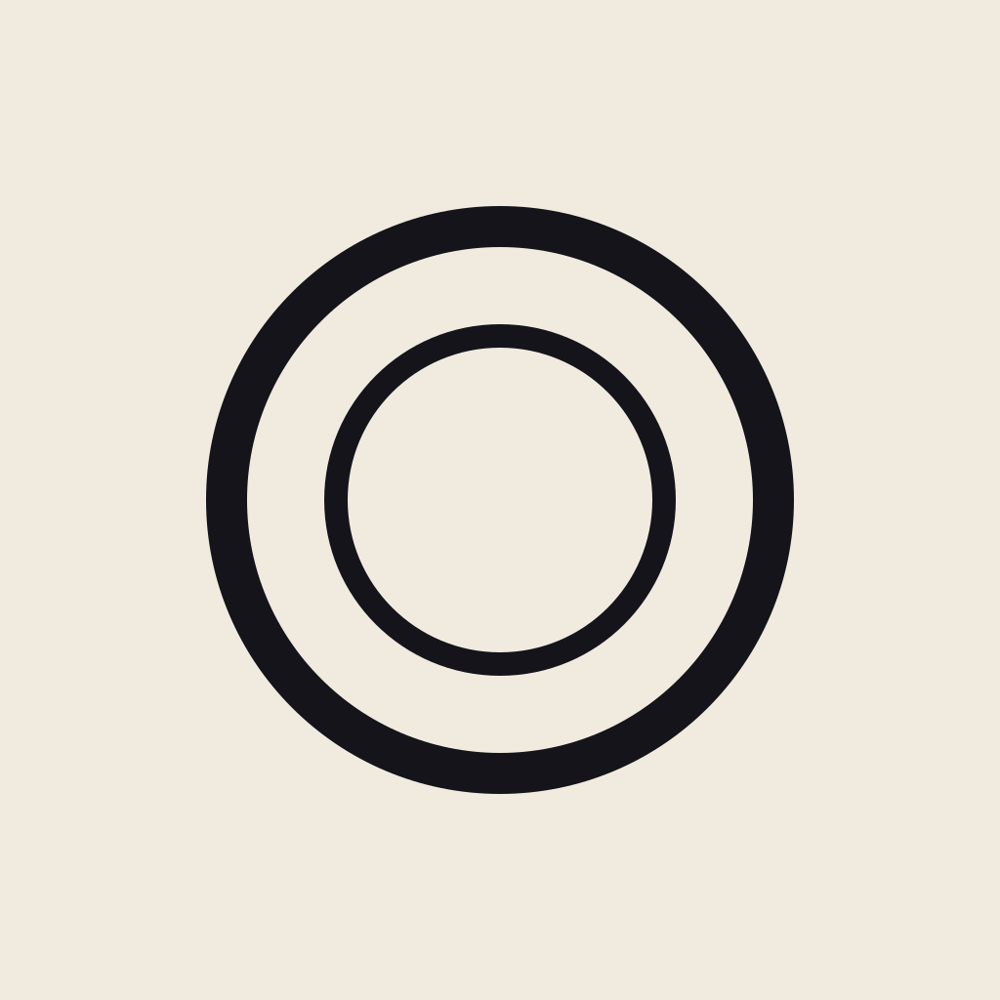

Hand-off package for engineering. Every asset is SVG and ships ready to drop into Apple Asset Catalog, web public folders, or design tools.
Use the mark alone for favicons, app icon contents, social avatars, splash, and any context below ~48px where the wordmark wouldn't be legible.
Setting: Inter Medium 500, uppercase, letter-spacing: 0.42em. Use the wordmark alone in contexts where the mark is established (inline body mentions, breadcrumbs, footers).
Default treatment for app top-bars, web headers, and marketing pages.
Use for splash screens, packaging hangtags, and contained square moments.

Both are full-bleed 1024×1024 squares — iOS applies the squircle mask automatically. The corner radius shown here (~22.5%) is the iOS render. For Apple Asset Catalog, generate PNGs at: 1024, 180, 167, 152, 120, 87, 80, 76, 60, 58, 40, 29.
All tokens are in brand/tokens.css and brand/colors.json. Macro data colors (protein blue, carbs amber, fat magenta, fiber green) live there too — they're never used for branding, only for nutrition data.